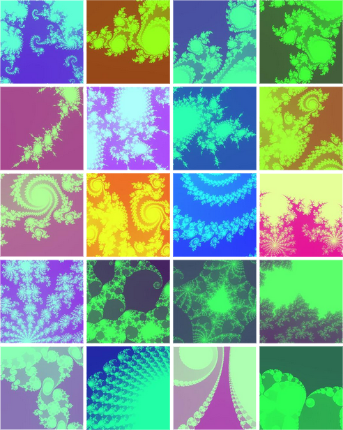

Engineering Computation Laboratory
Fractal Generator

The Mandelbrot Set Explorer
|  |
Click on the edge of the pattern to zoom in.
(I wanted to write a 3D version and a fractal terrain navigation robot, but ran out of time... Hope I
can do this when I retire 30 years later ;-) |